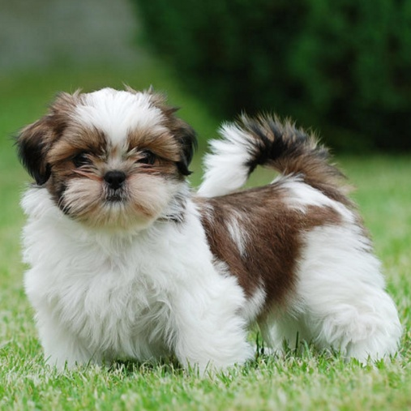

시추 Shih Tzu
착하고 온순한 성격을 가진 중국 출신의 소형견 입니다. 예전 중국에서 사자구(獅子狗/狮子狗, 스쯔거우), 즉 사자개로 불렸었습니다. 중국 황실을 위해 티벳의 라사압소를 들여와 페키니즈와 교배시켜 오랜 세월에 걸쳐 만들어낸 견종이라는 게 일반적인 설로 받아들여지고 있습니다.
착하고 온순한 성격을 가진 중국 출신의 소형견 입니다. 예전 중국에서 사자구(獅子狗/狮子狗, 스쯔거우), 즉 사자개로 불렸었습니다. 중국 황실을 위해 티벳의 라사압소를 들여와 페키니즈와 교배시켜 오랜 세월에 걸쳐 만들어낸 견종이라는 게 일반적인 설로 받아들여지고 있습니다.
키는 22~27cm 정도이며 체중은 4~7kg 사이. 애완견들이 더욱더 소형화 추세에 있어 가정에서는 3kg대의 시추를 흔하게 볼 수 있고, 1~2kg대의 콩시추도 있습니다. 물론 10kg의 시추도 있습니다.
주둥이는 짧고 눈이 굉장히 큽니다. 신체 구조상 코가 짧은 관계로 코를 잘 곱니다. 애교를 부릴 때는 고양이처럼 옆 얼굴이나 몸통을 사람 몸에 비비는 행동을 보이고 심지어 몸도 고양잇과 못지 않게 굉장히 유연합니다.
가장 짖음이 없는 견종에 속합니다. 자존심이 강한 견종이라 짖음으로 의사 표현을 하거나 속내를 드러내 보이는 것을 별로 좋아하지 않습니다. 가끔 배가 고프거나 하면 주인에게 와서 외마디로 "컹!" 하고 마는 편입니다.
태어난지 약 3개월이면 얼굴 주위에 난 털이 국화처럼 피어난다고 해서 국화개라는 별명을 가지고 있으나, 성장하면서 얼굴의 털은 조금씩 빠져 성견이 되었을 때는 인상이 새끼때와는 다릅니다.
고집이 무척 세며 자신의 습성을 바꾸려 하지 않는 속성이 무척 강합니다. 때문에 훈련이 매우 어렵다는 말이 나옵니다. 지능이 낮아서라기 보단 특유의 귀차니즘 + 자존심 + 고집 + 습관을 바꾸려 하지 않는 속성이 버무려진 결과입니다.
사람을 무척 좋아합니다. 사람들에게 귀여움 받는 것을 좋아하는 시추는 낯선 사람을 보면 자신을 귀여워해 줄 것이라 생각해 일부러 하이에나처럼 주변을 어슬렁거리거나 심지어 멀리서 낯선 사람을 발견하면 그에게 애교를 부리기 위해 주인을 뿌리치고 달려가기까지 합니다.
견종 자체가 매우 순하고 덜 짖는 성격이라서 초보자가 키우기에 적합합니다. 초인종 소리에 무던한 경우가 많기 때문에 아파트나 연립주택에서 키울 때도 적합합니다. '혼자있는 외로움'을 잘 참아내기 때문에 집을 자주 비우는 현대인이 기르기에 좋습니다.
시추는 판막 질환의 가능성이 높은 견종으로, 노령견의 경우 주의를 요합니다. 이미 평상시에 기침이 시작되었을 경우 판막 질환이 3 ~ 4기 정도로 진행되었을 가능성이 높기 때문에 평소에 강아지의 호흡 수를 잘 확인하도록 하고 심장 초음파 등을 통해 미리 병을 파악하도록 하는 것이 중요합니다. 심장 판막 질환은 실질적으로 완치가 불가능하고 단지 신장에 부담을 주는 약을 써서 현재 상태를 유지하는 것이 전부이므로 최대한 빨리 알아차리고 병을 관리할 수 있도록 해야 합니다. 상태가 심한 경우 폐에 물이 차는 폐수종이 발생하여 상황이 정말 심각해질 수 있기 때문에 주의를 기울여야 합니다.
시추는 자기가 아픈 내색을 잘 하지 않고 참는 경우가 많기 때문에 어쩌다 건강진단을 하러 병원에 갔을 때 심각한 질병이 발견되는 경우가 많습니다. 7살 이상의 시추를 기르고 있다면 6개월에 한 번씩 꼭 건강진단을 받으러 가길 권합니다.
식분증(자기 똥을 먹는것)하면 대표적으로 언급되는 견종입니다. 식분증은 모든 견종에서 일어날 수 있지만 시추에게서 매우 빈번하게 나타나고 대부분 고쳐지지 않습니다. 식분증이 많이 일어나는 원인으로는 특유의 끝까지 주인에 대한 경계심을 풀지 않고 있는 것이라고 할 수 있습니다. 견주들은 이러한 사실을 인식못하고 시추가 식분증을 보이거나 배변을 못가리면 무조건 야단치는 경우가 있는데 이 때문에 시추는 주인을 더 경계하게 되고 식분증과 배변 문제가 고쳐지지 않는 악순환이 반복됩니다.